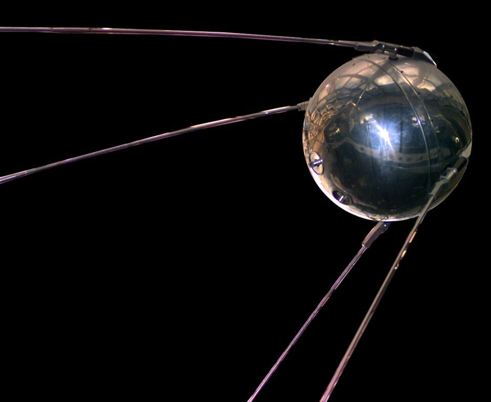

Universe · 6 articles
Space exploration
From Sputnik to Artemis: the space race, the Moon landings, the probes that have visited every planet, the great telescopes and life in orbit.
In under seventy years humanity has gone from launching a beeping metal sphere to walking on the Moon, sending robots to every planet and living continuously in space. This is the story of that adventure and of what comes next.

The space raceThe rivalry between the Soviet Union and the United States that produced the first satellite, the first human in space and, in the end, the Moon landing. Apollo and the return to the MoonTwelve people have walked on the Moon, all between 1969 and 1972. With Artemis, humanity is getting ready to return.
Apollo and the return to the MoonTwelve people have walked on the Moon, all between 1969 and 1972. With Artemis, humanity is getting ready to return. Space probesRobots that have visited every planet, landed on comets and left the solar system. The Voyagers are still sending data almost 50 years on.
Space probesRobots that have visited every planet, landed on comets and left the solar system. The Voyagers are still sending data almost 50 years on. Space telescopesAbove the atmosphere, Hubble, Webb and Euclid have seen the most distant galaxies and the planets of other stars.
Space telescopesAbove the atmosphere, Hubble, Webb and Euclid have seen the most distant galaxies and the planets of other stars. Living in spaceThe International Space Station has been continuously inhabited for over 25 years. How people eat, sleep and work 400 km up.
Living in spaceThe International Space Station has been continuously inhabited for over 25 years. How people eat, sleep and work 400 km up. Exploring MarsRobots that drive, fly and drill: half a century searching for water and life on the red planet, and the dream of sending people.
Exploring MarsRobots that drive, fly and drill: half a century searching for water and life on the red planet, and the dream of sending people.